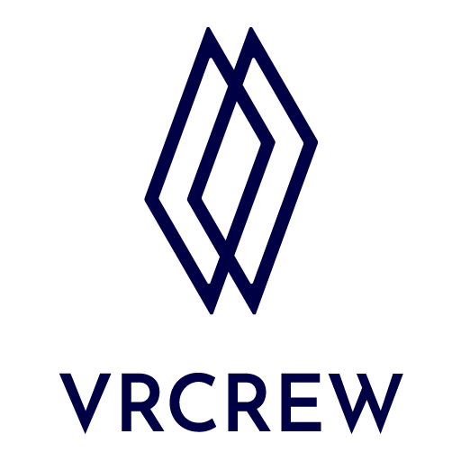

Professional Experience
Research Engineer
Aug 2024 – Aug 2025CONNECTIVE Inc.
Designed a framework for composite image generation to address data scarcity in medical X-ray datasets

Research Engineer
Jan 2023 – Aug 2024VRCrew Inc.
Developed a visual positioning system (VPS) for a VR application, estimating user location using mobile devices

Research Intern
Sep 2021 – Aug 2022Korea Institute of Science and Technology
Proposed a performance restoration method for pruned networks using knowledge distillation with synthetic data generated via network inversion
Research Intern
Feb 2021 – Aug 2021Saige Research Inc.
Implemented OCR models to automate manufacturing processes